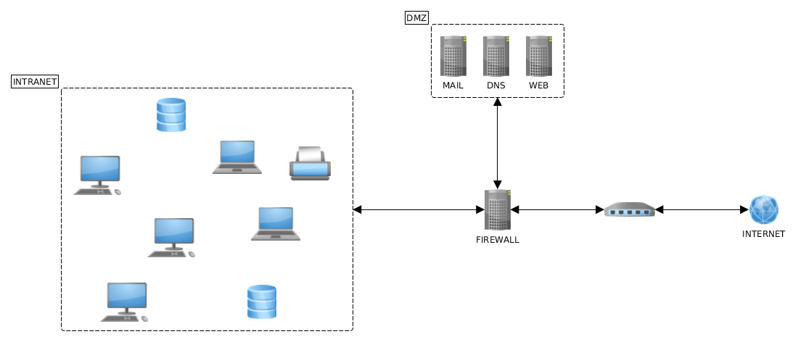
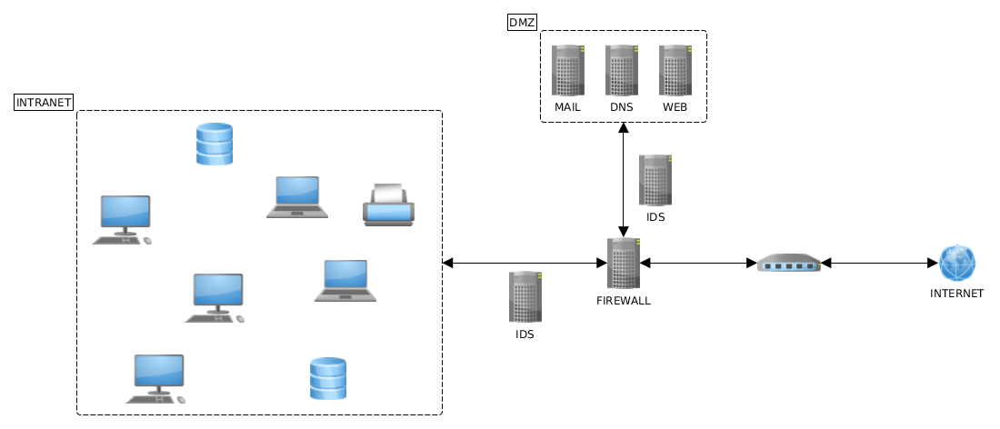
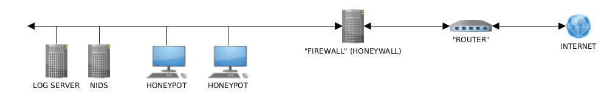

Seguridad en redes
Mikel Egaña Aranguren
mikel-egana-aranguren.github.io

Mikel Egaña Aranguren
Mikel Egaña Aranguren
mikel-egana-aranguren.github.io
https://doi.org/10.5281/zenodo.4302267
https://github.com/mikel-egana-aranguren/EHU-SGSSI-01

Confidencialidad e integridad de la información mediante protocolos criptográficos
Sistema de autenticación para usuarios
Control de accesos
Supervisión de la utilización de servicios
Garantizar la disponibilidad de la red y los servicios
Controlar los accesos a los equipos
Evitar los intentos de intrusión
Crear una barrera entre la red interna y el exterior
Canalizar todo el tráfico por un punto monitorizado y protegido
Permitir solo algunas conexiones
Normas menos restrictivas en la red interna
Servidor que actua de intermediario
El cliente hace las peticiones al proxy que se encarga de gestionarlas y enviarlas a los servidores remotos
Proporciona mayor seguridad durante la navegación porque el servidor desconoce quién se ha conectado realmente
Aísla a los clientes del mundo exterior
El servidor hace una traducción de direcciones mediante el protocolo NAT (Network Address Translation), convirtiendo las IPs internas de los equipos en una única IP externa
Se decide qué servicios de internet se podrán utilizar y por quién
Bloquear acceso a determinadas IPs y dominios de internet
Crear caches para acelerar la navegación
Auditoría de uso de servicios y ancho de banda por parte de usuarios
Antivirus perimetral
Acceso controlado desde el exterior a servidores de la empresa, por ejemplo servidores web
Balanceo de carga
Elemento de red (Hardware o software) que filtra paquetes segun una política definida previamente por el administrador, teniendo en cuenta la fuente y el destino
A diferencia del Proxy se pueden establecer conexiones directas (autorizadas) con máquinas externas
Bloqueo del tráfico no autorizado: servicios de internet, determinadas direcciones, etc.
Ocultación de los equipos internos de la organización ante posibles ataques
Ocultar información sobre la topología de la red interna
Registro de todo el tráfico entrante y saliente
Redirección del tráfico entrante hacia DMZ (DeMilitarized Zone)
Limitación de ancho de banda utilizado por tipo de tráfico o protocolo
Estadísticas sobre ancho de banda usado por distintos servicios
Monitorización de ataques o intentos de intrusión
Zona entre la intranet e internet donde se ubican los servicios públicos (correo, ftp, etc.) que quedan más expuestos a los problemas de seguridad
Se crea mediante el uso de uno o dos cortafuegos que limita el acceso entre las distintas redes
Desde DMZ no se puede acceder directamente a la intranet

Reglas de filtrado
Teniendo en cuenta: IP origen y destino de los paquetes de datos, protocolo, servicio (puerto)

A nivel de paquetes de datos: filtrado de paquetes por origen/destino, puertos etc.
Dinámicos (Statefull Packet Inspection): además de paquetes de datos, tienen en cuenta la información sobre estados de sesión (Flags)
Pasarelas de aplicación: tienen en cuenta las reglas del protocolo y la sesión, no solo los datos de los paquetes individuales
Bloquear paquetes que incluyan dirección de difusión (Broadcast) por ataques DoS
Bloquear paquetes de entrada con direccion fuente correspondiente a direcciones internas por suplantación de identidad (Spoofing)
Bloquear todos los paquetes de entrada con direcciones privadas referenciadas en RFC 1918 (Address Allocation for Private Internets)
Bloquear los paquetes de entrada con direcciones fuente 127.0.0.1
Bloquear los paquetes del protocolo de control ICMP que en respuestas a peticiones Ping o Traceroute pueden dar información sobre la topología de la red interna
Bloquear los paquetes ICMP Redirect que permiten modificar las tablas de enrutamiento de los routers
Bloquear todos los paquetes con un tamaño inferior al mínimo permitido o con valores inválidos en la cabecera
Conexion remota: Telnet (23), SSH (22), FTP (21)
Protocolo NetBIOS en Windows
RPC y servicio NFS en Redes UNIX
HTTP, SSL, SMTP, POP, IMAP, DNS, LDAP en máquinas que no actúan como servidores
Ataques basados en ingeniería social
Ataques físicos: ej. USB
Ataques a nivel de protocolo, ej. HTTP
Virus introducidos por portátiles que se han infectado en el exterior
127.0.0.1 user-identifier frank [10/Oct/2000:13:55:36 -0700]
"GET /apache_pb.gif HTTP/1.0" 200 2326
127.0.0.1 user-identifier frank [10/Oct/2000:13:55:36 -0700]
"GET /apache_pb.gif HTTP/1.0" 200 2326
Sistemas encargados de detectar y reaccionar de forma automatizada ante los incidentes de seguridad en redes
Fuente de eventos de la red o sistema
BBDD de comportamientos normales/anormales
Motor de análisis: analiza la fuente de eventos basándose en la BBDD
Módulo de respuesta: alarmas e informes

Respuestas pasivas: registrar las posibles intrusiones, generar informes
Respuestas activas: anular las conexiones TCP inyectando paquetes de reinicio en la conexiones; reconfigurar cortafuegos para filtrar tráfico anómalo, desconexión automática de servidores, bloqueo de cuentas / privilegios, localización de origen de ataque y notificación a los ISP
Intrusiones en un host, en una máquina concreta
Análisis de logs del kernel
Verificación de la integridad de los ejecutables
Auditoría periódica de permisos asignados a los recursos
Revisión detallada del proceso de instalación de nuevas aplicaciones
Monitorizan el tráfico de red para buscar actividad sospechosa:
Enrutamiento anormal de paquetes
IP spoofing: usar una IP no válida o en desuso de los tramos internos
DNS spoffing: afluencia de paquetes DNS
Monitorizan el tráfico de red para buscar actividad sospechosa:
SYN flooding: invasión de paquetes TCP SYN
Falsa correspondencia entre las direcciones MAC conocidas y las direcciones IP de los equipos
Permite descargar nuevas reglas de detección de intrusos
Sistema "señuelo" para que sea atacado
Honeynet: red de honeypots
Desviar los ataques
Obtener conocimiento de métodos de ataque
Obtener muestras de malware
